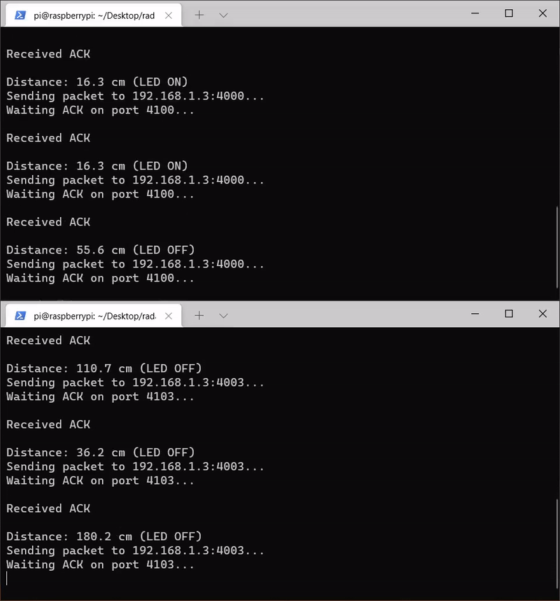

Introduction
Primo progetto.Requirements
Si desidera costruire un’applicazione software capace di:
- (requisito radarGui) mostrare le distanze rilevate da un sensore Sonar HC-SR04
connesso a un RaspberryPi su un display (RadarDisplay) a forma di radar connesso a un PC.

- (requisito ledAlarm) accendere un Led se la distanza rilevata dal Sonar è inferiore a un valore limite prefissato denominato DLIMIT.
Problem analysis
Test plans
- Verificare che l'oggetto venga rilevato correttamente: utilizzare un metro per misurare la distanza dell'oggetto dal sonar, e verificare che la distanza rilevata sia circa la medesima o comunque differisca di un errore trascurabile;
- Verificare che il LED si accenda quando l'oggetto viene posizionato ad una distanza inferiore alla soglia DLIMIT;
- Verificare che radarGui aggiorni correttamente la grafica del radar e le coordinate dell'oggetto rilevato, utilizzando un client di test che invii valori pseudo-randomici o una sequenza fissa;
Project
Repository del progetto|  |  |
| Radar Client (Sonar) | Radar Server (GUI) |
Architettura Logica
Il progetto consiste in 2 princiali componenti:- server, esegue su una macchina distinta rispetto al raspberry e si occupa di ricevere i dati inviati dal raspberry, elaborarli e visualizzarli a schermo tramite la grafica di un radar.
- client, esegue sul raspberry e si occupa di ricevere l'input dal sonar e trasmetterlo al server. Sempre il client, qualora la distanza rilevata dal sonar dovesse essere inferiore alla soglia DLIM, si occupa di accendere il LED.
Strumenti e Librerie
Per la realizzazione del radar abbiamo scelto di utilizzare la libreria SDL2, che permette di realizzare applicazioni grafiche efficienti ed è molto portabile (lo stesso codice SDL2 può essere compilato ed eseguito su architetture differenti). SDL2 prevede anche un modulo relativo al networking, che abbiamo deciso di utilizzare per la comunicazione tra il raspberry e la macchina che visualizza graficamente i risultati. Per la realizzazione del codice che esegue su raspberry, abbiamo deciso di utilizzare la libreria wiringPi, che permette di accedere facilmente all'hardware e in particolare ai pin GPIO.Dettagli Realizzativi
Server
Il server è costituito da diversi moduli, ciascuno dei quali ha un ruolo differente:- main.c, inizializza SDL2 e le varie strutture dati, dopodiché implementa il ciclo di esecuzione principale dell'applicazione, realizzando la sequenza logica delle operazioni da eseguire ad ogni frame: quando la linea di rilevazione del radar si trova ad un angolo che corrisponde ad una direzione associata ad un sonar, controlla se ci sono dati da ricevere dal client relativo; in caso affermativo mostra a schermo un pallino, la cui distanza dal centro del radar è proporzionale alla distanza rilevata dal sonar; dopodiché viene aggiornata la posizione della linea del radar, applicandovi una rotazione in base al centro di quest'ultimo; infine, viene cappato il framerate per fare in modo che la linea compia un giro completo (360°) ogni 2 secondi.
- draw.c,
contiene tutte le funzioni utili a renderizzare una texture nella finestra mostrata a schermo, e disegnare le varie entità presenti. In particolare la funzione
prepareScene()pulisce il renderer, cancellando tutto ciò che era presente dal frame precedente, così che la finestra possa essere ridisegnata con texture ed entità aggiornate. La funzionepresentScene()visualizza il contenuto del renderer a schermo. Queste due procedure vengono chiamate rispettivamente all'inizio ed alla fine del ciclo del main. - text.c, contiene le funzioni che permettono di renderizzare del testo. Lo scopo di tale modulo è quello di consentire di visualizzare a schermo le coordinate degli oggetti rilevati, oltre alla rappresentazione grafica del pallino nel radar.
- net.c, contiene tutte le funzioni e procedure che permettono la comunicazione tra raspberry e server del radar. In particolare, utilizziamo un set di socket che ci permette di controllare se sono presenti messaggi nelle socket contenutevi e, in caso affermativo, di leggere il pacchetto in arrivo. Questo permette di realizzare un meccanismo di comunicazione ideale, superando la semantica sincrona della receive. Tuttavia, poiché il client esegue su una macchina separata, e i tempi non sono sincronizzati, abbiamo utilizzato un segnale di ACK, inviato dal server al client, per fare in modo che il client non invii più pacchetti di quanti il server ne possa ricevere. Se così non fosse, questi si accumulerebbero e non rappresenterebbero più (quando viene mostrato a schermo sul radar) lo stato attuale rilevato dal sonar. In questo modo, il client attende l'ACK prima di fare una nuova rilevazione.
Extra
Per rendere l'applicazione più gradevole, abbiamo deciso di aggiungere ulteriori componenti:- sound.c, il modulo sound permette sostanzialmente di riprodurre un suono quando viene rilevato un oggetto, nel range del sonar.
Client
Per realizzare il componente client, abbiamo utilizzato il codice realizzato in precedenza per ledAlarm, il quale permetteva di ottenere la distanza rilevata dal sonar e di accendere il LED se questa era inferiore ad una certa soglia. Dunque lo abbiamo modificato aggiungendo le funzionalità relative alla comunicazione col server (radarGUI), ovvero il client ad ogni ciclo:- rileva la presenza di oggetti tramite il sonar, scrivendo il valore HIGH sul pin TRIGGER, controllando la durata in cui l'onda del pin ECHO rimane a valore HIGH, e facendo qualche piccolo calcolo per ottenere la distanza;
- invia al server la distanza rilevata, sfruttando la libreria SDL2_net;
- attende l'ACK del server, prima di effettuare una nuova rilevazione.
Collegamenti